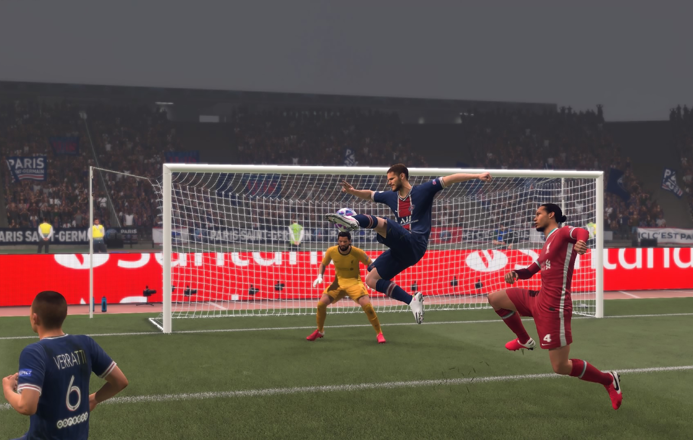

FIFA 21
Puntuación
- Gráficos
- Sonido
- Historia
- Jugabilidad
Sinopsis
FIFA 21 es un videojuego de simulación de fútbol del año 2020 disponible para Microsoft Windows, PlayStation 4, Xbox One y Nintendo Switch el 9 de octubre de 2020, y aparte es el primer videojuego de la serie FIFA para Google Stadia, PlayStation 5 y Xbox Series X|S.
El juego es la 28.ª entrega de la serie de videojuegos de FIFA.
El jugador Francés Kylian Mbappé fue elegido para ser la portada del FIFA 211 y como embajadores estarán Trent Alexander-Arnold, Erling Braut Haaland y João Félix (Leer más)